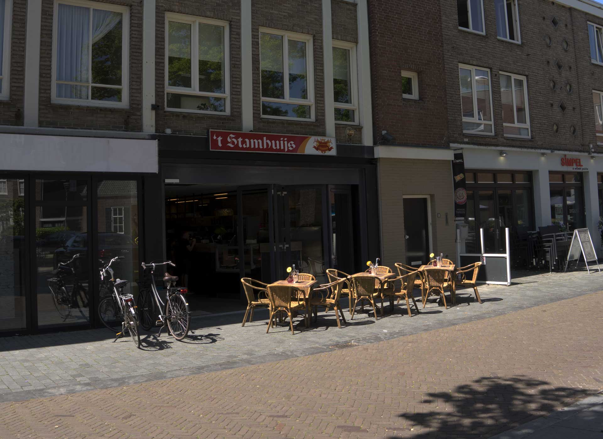
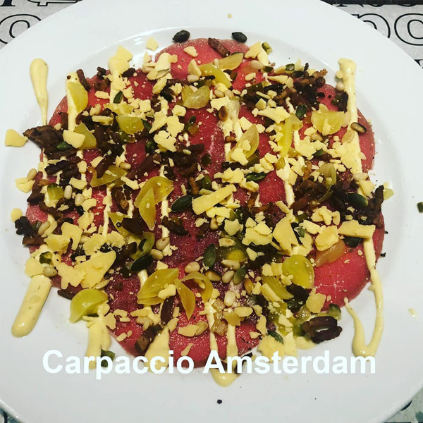
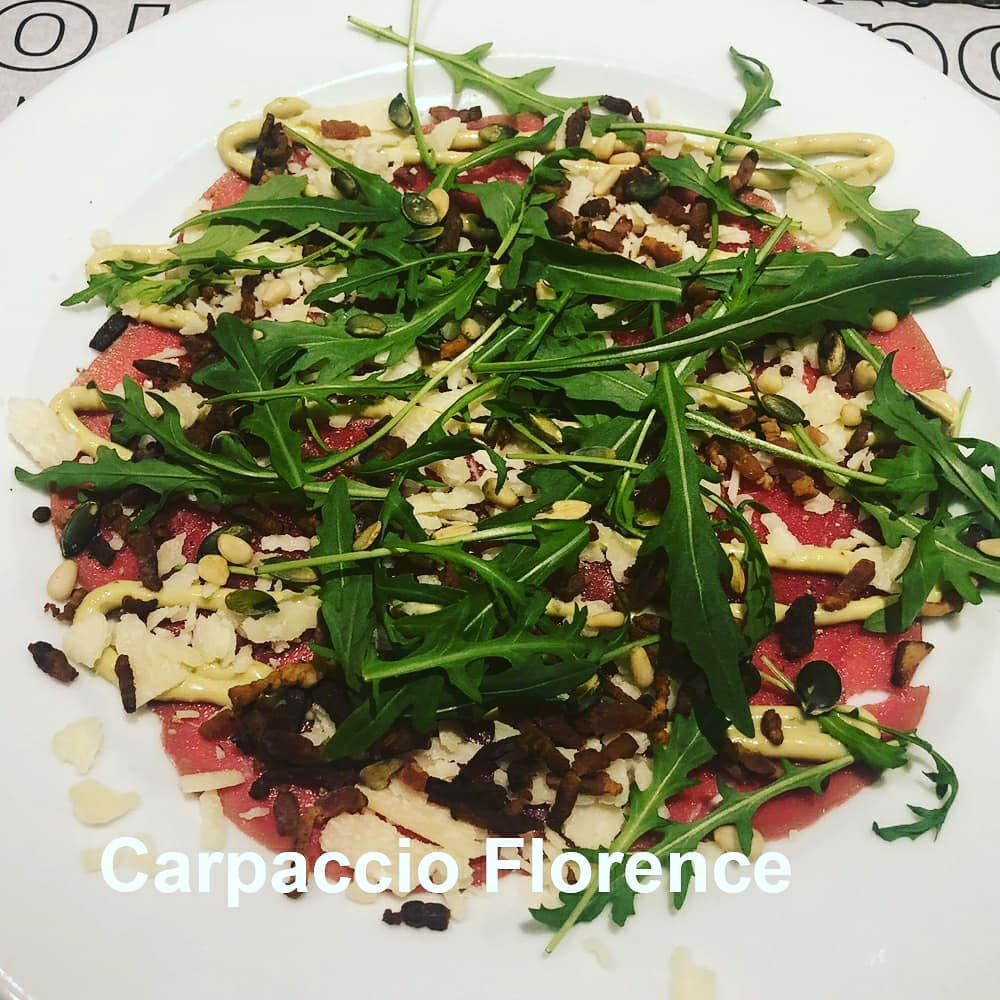

Markt 14, Schijndel
Ambachtelijke cafetaria't Stamhuijs
Wij gaan voor de allerbeste kwaliteit. De beste snacks en frites, en een grote variatie aan Stamhuijsgemaakte gerechten uit eigen keuken. Lekker ambachtelijk en toch modern!

gemaakt

Slager Marijn
Marijn runt samen met zijn team cafetaria 't Stamhuijs. 'Onze Marijn' is van huis uit slager, dus alleen het beste vlees komt de Stamhuijskeuken binnen. Het vlees wordt in eigen keuken uitgesneden en bereid.
Welkom
Kom gewoon eens binnen lopen
Cafetaria 't Stamhuijs in Schijndel is een ambachtelijke cafetaria waar kwaliteit en gezelligheid voorop staan. Kom binnen en proef de Brabantse gezelligheid en heerlijke gerechten!
Kom gezellig binnen
Wij willen graag dat u zich thuis voelt en de Brabantse gezelligheid ervaart waar wij zo trots op zijn.
Uit eigen keuken
Dagelijks vers bereid van de beste verse ingrediënten. En dat proef je!
Steppegras
Heerlijke flinterdunne frietjes. Lekker bij veel gerechten, maar bij spareribs een echte aanrader!
Ons terras
Onder het genot van een natje en een droogje gezellig 'buurten', of rustig kijken wat er voorbijkomt. In goed Brabants: 'bliéken'.
Ambachtelijk & modern
Op het terras nemen wij uw bestelling op met een tablet, en online bestelt u met de Stamhuijs-app.
Bezorgservice en catering
Wij bezorgen in héél Schijndel, en verzorgen catering voor bedrijven en particulieren.
Ons assortiment
Van frietje met tot sparerib menu
Meer dan de bekende snackbarproducten: ook verse salades, stoofpotjes, soepen en Stamhuijsgemaakte specialiteiten. Prijzen uit het assortimentsboekje van september 2026.
Alle menu's worden standaard geserveerd met friet; gebakken aardappeltjes, Steppegras, Max patat, twister, rijst, bami of nasi kan tegen meerprijs. Iedere maand een menu van de maand in de aanbieding: kijk op de balie of vraag ernaar. Assortimentsboekje als PDF

Friet of patat?
Wij Brabanders bestellen een frietje
Een frietje met, frietje speciaal of frietje oorlog. De meeste Nederlanders bestellen een patatje; de grens tussen friet en patat ligt grofweg ter hoogte van de Maas. Bij 't Stamhuijs bakken we diverse soorten, hoe u het ook noemt.
Ambachtelijke friet
Onze zelf bereide 'standaard' friet, dagelijks vers voorgebakken en niet industrieel. De kleur kan per seizoen iets verschillen.
Steppegras
Zeer dunne 'Franse' frietjes. Lekker bij spareribs.
Max patat
Aardappelpoeder gemengd met water, in staafjes geperst, op lengte gesneden en gefrituurd.
Wij frituren verantwoord
Behalve lekker vinden we gezond eten ook belangrijk. Dat ziet u aan ons assortiment met veel verse groenten, en we bakken in vloeibare plantaardige olie. Onze fritessaus van Oliehoorn is vervangen door een glutenvrije variant, en onze eigen Corona-, cocktail- en knoflooksaus zijn ook glutenvrij. Lees meer over verantwoord frituren bij het Voedingscentrum.


Ons carpaccio-assortiment
Van het luxe carpacciobroodje met ossenhaas, truffelmayonaise, oude kaas en pijnboompitjes tot carpaccio salade en carpaccio als voorgerecht in de catering.
Bestellen
Bestellen zoals u dat wilt
In de cafetaria
Op de traditionele manier: kom naar de Markt 14 en geef uw bestelling op.
Bellen
Bel 073 549 8020 en haal uw bestelling op het afgesproken tijdstip op. U betaalt bij het afhalen. Tijdens drukke momenten lukt telefonisch bestellen niet altijd; dan adviseren wij online.
Online
Op onze bestelpagina vindt u het volledige assortiment met prijzen. Postcode invullen, bezorgmoment kiezen, bestelling selecteren en betalen met iDEAL of bij afhalen.
Naar online bestellenStamhuijs-app
Bestel online met de Stamhuijs-app. Op het terras nemen wij uw bestelling op met een tablet.
Bezorgen in Schijndel
bezorgkosten, in héél Schijndel. Minimaal € 10,- bij bezorgen; betalen met iDEAL is verplicht bij bezorging. In de cafetaria kunt u pinnen en contant betalen.
De enige echte Stamkaart. Heeft u 'm al?
Bij iedere euro besteding spaart u 10 Stamhuijspunten. Iedere 1500 punten zijn goed voor € 5,- kassakorting op een bestelling. Punten zijn ook in te wisselen voor wisselende speciale aanbiedingen, het Maandmenu en de Maandsnack.
Sparen zonder kaart: digitaal, op basis van uw postcode en naam. Geen pasje nodig.
Catering & gourmet
Ook voor al uw catering en gourmetschotels
Voor bedrijven bijvoorbeeld een broodjeslunch of overwerkmaaltijd. Voor particulieren alle vormen van (party)catering, zoals barbecue, en complete gourmetschotels. Prijzen per persoon; schotels vanaf 4 personen, met stokbrood en kruidenboter. Bestel minimaal een week vooraf: vul de bestellijst in en geef hem af in de cafetaria, of mail naar info@stamhuijs.nl.
Altijd Goed Buffet
per persoon, vanaf 6 personen. Met gegratineerde aardappeltjes, rijst met groenten, huzarensalade, gemengde salade, fruitsalade en stokbrood. U kiest er 3 gerechten bij.
Vlees
- Beenham in boerensaus
- Boeuf bourguignon
- Gehaktballetjes in zigeunersaus
- Hollands stoofpotje
- Indische gehaktballetjes in ketjap
- Rendang
- Varkenshaas in champignonsaus
- Varkenshaas stroganoff
Kip en wild
- Hazenpeper (+ € 1,00)
- Hete kip
- Kip pilav
- Kipsaté
Vis
- Gamba's in pittige roomsaus (+ € 2,00)
- Visserspotje (+ € 1,50)
Vegetarisch
- Mexicaanse roerbak
- Teriyaki ketjap
Salades, soepen en voorgerechten
Gourmet
Extra's
Werken bij 't Stamhuijs
Personeel gezocht
Cafetariamedewerk(st)er
Vanaf 18 jaar. Dagen en uren in overleg, werktijden tussen 16.00 en 21.00 uur. Bereid om in het weekend te werken.
Leerling-kok of keukenmedewerker
Een gedreven kok of keukenmedewerker met passie voor koken. Dagen en uren in overleg, werktijden tussen 16.00 en 21.00 uur. Bereid om in het weekend te werken.
Erkend leerbedrijf
't Stamhuijs is een SBB Erkend Leerbedrijf, onder andere voor SVO Medewerker fastservice en de MBO-opleiding kok niveau 1, 2 en 3. Wil je alle kneepjes van het cafetariavak leren? Vraag naar Marijn.
Interesse? Mail je gegevens (cv) en motivatie naar info@stamhuijs.nl. Eerst meer weten? Neem gewoon even contact met ons op.
Openingstijden
Wij zijn open
| Maandag | gesloten |
| Dinsdag | 16.00 – 20.00 |
| Woensdag | 16.00 – 20.00 |
| Donderdag | 16.00 – 20.00 |
| Vrijdag | 12.00 – 20.00 |
| Zaterdag | 12.00 – 20.00 |
| Zondag | 12.00 – 20.00 |
Tosti's en uitsmijters tot 16.00 uur. Volg ons op Instagram en Facebook voor actuele openingstijden.
Cafetaria 't Stamhuijs
Markt 14, 5482 NE Schijndel
Telefoon 073 549 8020
info@stamhuijs.nl
KvK 98611135
Contact
Vragen, suggesties of bestellingen?
Neem gewoon contact met ons op. Voor een bestelling kunt u het beste bellen of online bestellen.